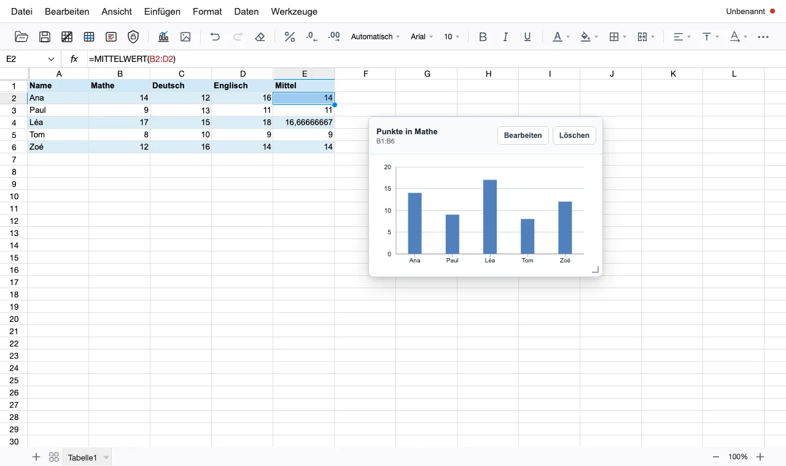

DocCells-Benutzerhandbuch
DocCells ist eine mehrsprachige Tabellenkalkulation im Browser, ohne Installation und ohne Konto. Es öffnet und speichert Excel-Arbeitsmappen (.xlsx).

Das Wichtigste in sechs Handgriffen
| Ziel | Vorgehen |
|---|---|
| Eingeben | eine Zelle anklicken, tippen, Eingabe (Daten eingeben) |
| Rechnen | = und dann die Formel tippen: =MITTELWERT(B2:B6) (Formeln) |
| Eine Formel kopieren | den blauen Anfasser der Auswahl ziehen oder Strg D (ausfüllen) |
| Formatieren | Menü Format oder die Schaltflächen (Formatierung) |
| Ein Diagramm zeichnen | Daten auswählen, (Diagramme) |
| Speichern | Strg S: eine Excel-Datei (öffnen und speichern) |
Inhalt
- Öffnen und Speichern: Dateien, zuletzt verwendete Dateien, Wiederherstellung, Google Sheets, Sprache.
- Die Oberfläche: Menüs, Schaltflächen, Bearbeitungsleiste, Register, Zoom.
- Daten eingeben, auswählen, kopieren, ausfüllen.
- Formeln, Listen und komplexe Zahlen, benannte Bereiche, Tabellenblätter.
- Zahlenformate, Formatierung, bedingte Formatierung, Zeilen und Spalten.
- Sortieren, filtern, suchen, Kontrollkästchen, Listen und Kalender, Diagramme und Sparklines, Bilder und Links, Drucken.
- Eine Arbeitsmappe für Schüler schützen, sie teilen und einbetten, sie mit DocGeo verwenden.
- Referenz: die 314 Funktionen, Tastenkürzel, Excel-Kompatibilität, häufige Fragen.
Konventionen
- Schaltflächen werden durch ihr Symbol bezeichnet ( fett).
- Strg steht auf dem Mac für ⌘.
- Formeln sind deutsch geschrieben: deutsche Funktionsnamen, Dezimalkomma, Semikolon zwischen den Argumenten. DocCells zeigt sie in der Sprache der Oberfläche.
- Im Handbuch suchen: / oder Strg K. Die Wörter können in beliebiger Reihenfolge und ohne Akzente eingegeben werden; ein Funktionsname, deutsch oder englisch, führt zu seiner Zeile.